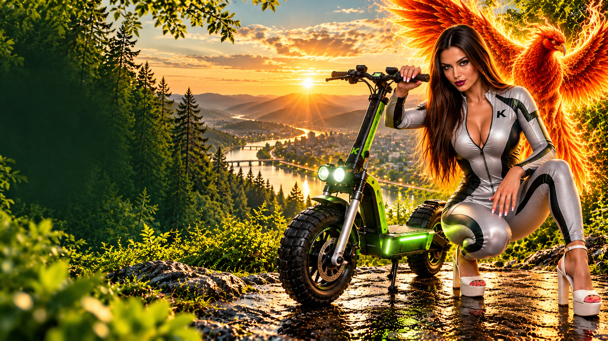
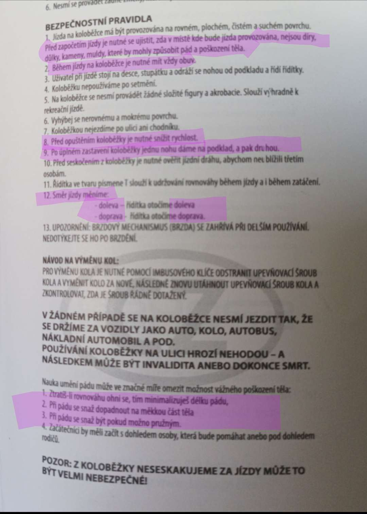
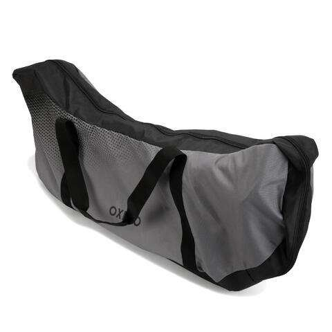
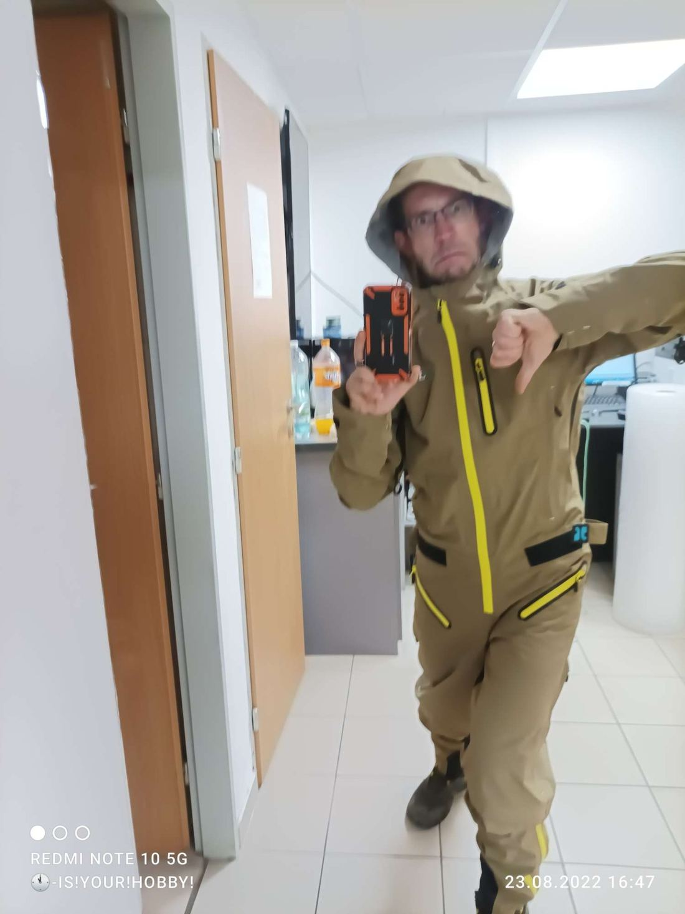
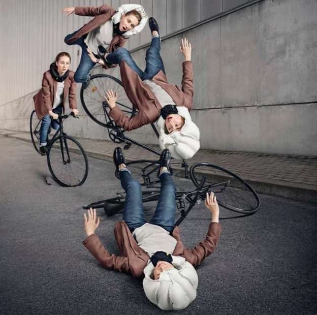
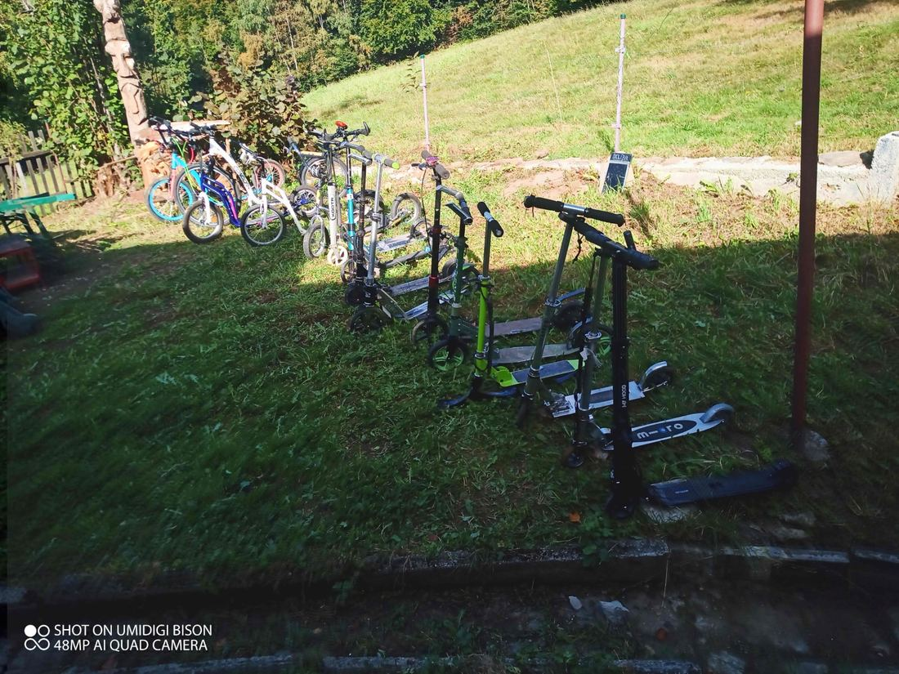

VÝHODY
NEVÝHODY

Teprve na koloběžce je to ten pravý relax, zažijte radost z přirozeného pohybu. Odpočinete od ruchu, uděláte něco pro zdraví — a když to vezmete z kopce, je to adrenalin.
osobní rekord na skládačce
odjetých a popsaných modelů
na jedné JD Bug MS132
podmínky, které výrobce nezkouší
Vyberte si kategorii. Modely jsou označeny podle tvrdé praxe: DOPORUČUJI, NEDOPORUČUJI nebo ⚡ BESTIE.
Ověřené postřehy z každodenního ježdění, servisní triky, doplňky a výbava, která na koloběžce dává smysl.

Stylová nafukovací ochrana hlavy jako límec kolem krku. Jak funguje při pádu na koloběžce a proč je šetrnější k účesu než klasická přilba.

Voděodolná pouzdra z tvrzeného EVA materiálu. Telefon, nářadí, peněženka i klíče v bezpečí i při prudkém dešti nebo pádu.

Nejlepší ochrana pro celoroční ježdění. Žádná stříkající voda na záda a zadek, neprofoukne a udrží tělesné teplo i při vysokých rychlostech.

Při odrážení se trup neustále hýbe. Batoh musí mít pevný hrudní i bederní popruh, jinak na zádech nepříjemně plandá a vyvádí z rovnováhy.
Vyhnutí se dlažebním kostkám, minimalizace prudkých stoupání a výběr kvalitního asfaltu vhodného pro malá i velká kola.

Pravidelná výměna nohy po 5 až 6 odrazech je klíčem ke zdravým zádům a rovnoměrnému zpevnění postavy bez jednostranného přetížení.
Otestuji jakoukoli skládací koloběžku — v jakýchkoli představitelných i nepředstavitelných podmínkách. Shrnu přednosti i nedostatky. Navrhnu náměty ke zlepšení.
Komplexní zátěžový test kvality zpracování. Silné a slabé stránky, kategorizace a vhodné využití konkrétního stroje.
Pomoc s výběrem správné koloběžky podle výšky, váhy i terénu. Zaučení správné techniky odrazu a střídání nohou.
To, co začalo jako otravná nezbytnost při komplikované dopravě, se záhy stalo oblíbeným koníčkem. Bydlím na kopci, skládačky nemají ideální brzdy — a přesto je základ HLAVNĚ NEBRZDIT. Když jsem překonal strach, začalo to bavit.
Otestuji jakoukoli skládací koloběžku, v jakýchkoli představitelných i nepředstavitelných podmínkách. Shrnu přednosti i nedostatky. Navrhnu náměty ke zlepšení.
Zátěžový test, servis nebo zaučení. Napište, zavolejte, nebo se stavte — při kraji lesa směrem na Brdo.
NAPSAT KOLOBĚŽNÍKOVI →